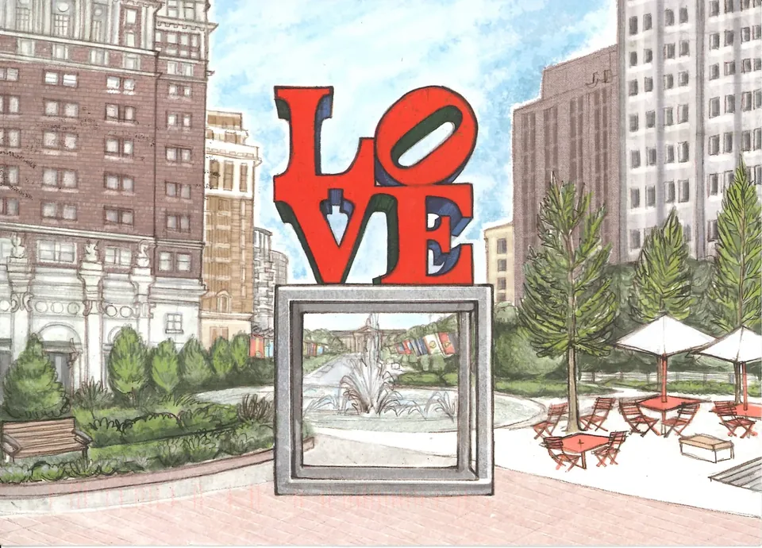

01 / 10 REFERENCE 11
Gravity, no bounce · reference
The original option 11: the travel you liked.
Ten focused studies combining the travel of option 11 with the settle of option 13. The first two are the originals for reference; the rest are proposed hybrids. Use the arrows to compare; replay as often as you like.

The original option 11: the travel you liked.